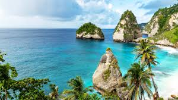

Exploring Bali: A Tropical Paradise
Last summer, I embarked on a journey to Bali, Indonesia. The serene beaches, vibrant culture, and delicious food made it an unforgettable experience.
One of the highlights was visiting the Tegalalang Rice Terraces, where I witnessed breathtaking views of lush green landscapes. I also had the chance to explore Uluwatu Temple, perched on a cliff with stunning ocean views.
Read more